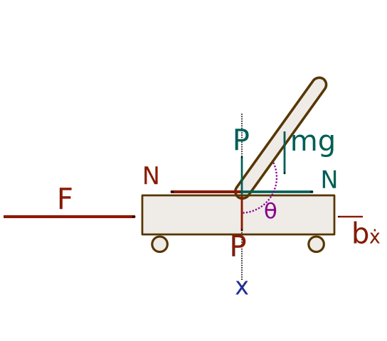

import numpy as np
G = 9.81
class CartPendulum:
def __init__(self, dt, length=200., pendulum_mass=0.5, cart_mass=1., friction_coefficient=0.0008):
self.dt = dt
self.length = length
self.pendulum_mass = pendulum_mass
self.cart_mass = cart_mass
self.friction_coefficient = friction_coefficient
self.cart_pos = 0.
self.cart_speed = 0.
self.pendulum_angle = np.pi / 2. + 1e-1 # angle
self.pendulum_speed = 0. # angular speed
self.friction_force = 0.
def step(self, force_on_cart):
pendulum_mass_length = self.pendulum_mass * self.length
total_mass = self.cart_mass + self.pendulum_mass
pendulum_inertia = self.length ** 2 * self.pendulum_mass + self.pendulum_mass * (self.length / 2.) ** 2
cosphi = np.cos(self.pendulum_angle)
sinphi = -np.sin(self.pendulum_angle)
self.friction_force = -self.friction_coefficient * self.cart_speed ** 2. * np.sign(self.cart_speed)
cart_acc = ((cosphi * pendulum_mass_length * self.pendulum_speed ** 2 + force_on_cart + self.friction_force) * pendulum_inertia -
(pendulum_mass_length * -G * cosphi) * (pendulum_mass_length*sinphi)) / \
(total_mass * pendulum_inertia - pendulum_mass_length*sinphi*pendulum_mass_length*sinphi)
angular_acc = (-cart_acc * pendulum_mass_length * sinphi + (pendulum_mass_length * -G * cosphi)) / pendulum_inertia
self.cart_pos += self.cart_speed * self.dt
self.cart_speed += cart_acc * self.dt
self.pendulum_angle += self.pendulum_speed * self.dt
self.pendulum_speed += angular_acc * self.dtIntroduction
The system we are going to describe consists of an inverted pendulum mounted on a motorized cart. This is very similar when you want to try keep the broom upwards on the tip of your finger. But why is it challenging?
The problem is inherently unstable. Like our broomstick, once it starts to move away from its equilibrium position (straight up), gravity works to accelerate its fall. The system is also non-linear. The relation between inputs (force we exert on the broomstick) and outputs (the broomstick’s angle) isn’t directly proportional. That makes predicting and controlling its behavior a beautiful puzzle. This system is a classic example of a nonlinear and inherently unstable setup, but it’s also simple enough to understand and simulate.
To make our life easier, let’s consider a simplified two-dimensional case. This system consists of two parts: the cart and the pendulum. The cart can only move horizontally, and the pendulum can freely swing back and forth. We can control the system by applying a horizontal force, \(F\), on the cart. We get feedback from the system in the form of three observations: the angle of the pendulum, the angular velocity and its angular acceleration. Using the equations of motions can help us understand how to control and balance such a system.

Equations of motion
Cart’s Motion
Let’s start with the motion of the cart. When we push the cart, it experiences several forces: its own inertia due to its mass “M,” a damping factor “b” related to friction, and the force “N” coming from the pendulum.
\[\begin{equation} M\ddot{x}+b\dot{x}+N = F \end{equation}\]
- \(M\) is the mass of the cart.
- \(b\) friction coefficient.
- \(\dot{x}\) is the velocity of the cart.
- \(\ddot{x}\) is the acceleration of the cart.
- \(N\) is the reaction force from the pendulum.
- \(F\) is the force we apply to the cart.
The term \(M\ddot{x}\) represents the force due to the cart’s acceleration. Essentially, Newton’s second law tells us that the force exerted on an object is directly proportional to its mass and acceleration.
The next term, \(b\dot{x}\), accounts for the force opposing the cart’s movement, primarily due to friction. The friction coefficient, \(b\), quantifies the amount of resistive force the cart faces, which increases with the cart’s velocity \(\dot{x}\). So, the faster the cart is moving, the greater the friction force it encounters.
Lastly, \(N\) is the reaction force exerted by the pendulum on the cart. As the pendulum swings, it applies a force on the cart, which the cart must counteract to maintain balance. We don’t know \(N\) yet, that’s why we just noted it with an arbitrarily chosen letter. In the following section we are determining the value \(N\) takes.
Note that we only summed the forces on the horizontal axis. You can also sum the forces in the vertical direction for the cart, but since the cart is unable to move vertically, this is unnecessary.
Pendulum’s Motion
When discussing the motion of the pendulum, it’s crucial to consider both the horizontal and vertical forces acting on it. This is because the pendulum, unlike the cart, can move in both directions due to its rotational nature.
Horizontal
The horizontal forces acting on the pendulum are captured by the equation:
\[\begin{equation} N = m\ddot{x}+ml\ddot{\theta}\cos\theta-ml\dot{\theta}^2\sin\theta \end{equation}\]
- \(m\) is the mass of the pendulum.
- \(l\) is the length of the pendulum.
- \(\theta\) is the angle of the pendulum.
- \(\dot{\theta}\) is the angular velocity
- \(\ddot{\theta}\) is the angular acceleration.
- \(N\) is the pendulum’s reaction force.
This equation essentially describes how the pendulum’s motion is influenced by the cart’s movement and its own inertia. The term $ m$ is the force exerted on the pendulum due to the acceleration of the cart. The term \(ml\ddot{\theta}\cos\theta\) describes the force on the pendulum due to its own angular acceleration, while −\(ml\dot{\theta}^2\sin\theta\) accounts for the centrifugal force acting on the pendulum as it swings.
Now, we can substitute this back in to the cart’s equation, which gives us: \[\begin{equation} (M+m)\ddot{x}+b\dot{x}+ml\ddot{\theta}\cos\theta-ml\dot{\theta}^2\sin\theta=F \label{eq:horizontal} \tag{1} \end{equation}\]
Vertical
So far we only dealt with the horizontal forces. To get the vertical forces for this system, we sum the forces perpendicular to the pendulum:
\[\begin{equation} P\sin\theta+N\cos\theta-mg\sin\theta=ml\ddot{\theta}+m\ddot{x}\cos\theta \end{equation}\]
- \(P\) is the vertical component the cart is pushing back on the pendulum.
- \(g\) is the acceleration due to gravity.
In this equation, \(P\) is the vertical component of the reaction force with which the cart pushes back on the pendulum. The gravitational force acting on the pendulum is represented by \(mg\sin\theta\), which tries to pull the pendulum downward. The right side of the equation relates to the forces due to the pendulum’s angular acceleration and the cart’s linear acceleration.
We need to get rid of \(P\) and \(N\). To do that we sum the moments about the centroid of the pendulum to get the following equation: \[\begin{equation} -Pl\sin\theta-Nl\cos\theta=I\ddot{\theta} \end{equation}\]
- \(I\) is the mass moment of inertia of the pendulum.
Combining these last two expressions, we get the vertical forces of the system: \[\begin{equation} (I+ml^2)\ddot{\theta}+mgl\sin\theta=-ml\ddot{x}\cos\theta \label{eq:vertical} \tag{2} \end{equation}\]
In our case \(I=m(\frac{l}{2})^2\), (you can look up the moment of inertia for different shaped objects).
Matrix Form of the System
From Equation \(\eqref{eq:horizontal}\) and Equation \(\eqref{eq:vertical}\) we can write the final equations of motion:
\[\begin{align*} \begin{bmatrix} M+m & mlcos(\theta) \\ cos(\theta)ml & m(\frac{l}{2})^2 + m{l}^2 \end{bmatrix} \begin{bmatrix} \ddot{x} \\ \ddot{\theta} \end{bmatrix} = \begin{bmatrix} F+ml{\dot{\theta}}^2\sin(\theta)-b\dot{x} \\ -mgl sin(\theta) \end{bmatrix} \end{align*}\]
This is in the form \(As=b\), where we are looking for \(s\), which describes the current state of the system, such as the cart’s acceleration and pendulum’s angular acceleration. If we can solve the equation for \(s\), we can get the accelerations and run a simulation. This can be done, by getting the inverse of \(A\), such as: \(s=b^T*{(A^T)}^{-1}\). After we get \(s\), we can use Euler’s method to calculate the position of the cart and the pendulum.
Running a Simulation Using Euler’s Method:
The beauty of Euler’s method is its simplicity. We’re essentially predicting the future (next state of the system) based on the present (current state) and a tiny step forward in time. It is a numerical technique to approximate a solution, where the exact solution can’t be calculated or just too hard to calculate. Formally, given an initial state, the method estimates the next state by taking a small step based on the rate of change.
However, a word of caution: Euler’s method isn’t perfect. The smaller the step, the more accurate our predictions, but it also means more computational work. We can spead up the simulation by taking larger steps, but in turn this leads to inaccuracies.
In our pendulum+cart case, we actually never determined the exact position of the cart for a given time \(t\). We have no clue where is the pendulum e.g. after 12 seconds, by substituting the values back into the equation we derived above. We only described how the system changes from one moment to another. However, if we know how the system changes, we can still calculate how it will move around as time passes. If we have an initial state and by only doing very small steps (we can do this since we know how the system changes), we can approximate where the cart and pendulum will be as time passes.
So in a more formal way:
- Start with initial conditions for \(x\), \(\dot{x}\), \(\theta\), and \(\dot{\theta}\).
- Calculate accelerations \(\ddot{x}\) and \(\ddot{\theta}\) using the matrix equations.
- Update the velocities and positions:
- \(\dot{x}_{new}=\dot{x}_{old}+\ddot{x}\times\) \(dt\)
- \(x_{new}=x_{old}+\dot{x}_{new}\times\) \(dt\)
- \(\dot{\theta}_{new}=\dot{\theta}_{old}+\ddot{\theta}\times\) \(dt\)
- \(\theta_{new}=\theta_{old}+\dot{\theta}_{new}\times\) \(dt\)
- Repeat for the desired number of steps or until we reach the end of simulation (e.g. 12 seconds).
Putting it all together
Now that we defined the system, we can write our lil simulation of the inverted pendulum on a cart:
Fin
The code to reproduce the visualization:
import math
import arcade
import numpy as np
SCREEN_WIDTH = 1200
SCREEN_HEIGHT = 600
class Simulation:
def __init__(self):
self.cart_pendulum = CartPendulum(0.05)
self.shift = 300
self.x0 = self.cart_pendulum.cart_pos + self.shift
self.y0 = self.shift
self.x1 = self.shift
self.y1 = self.shift
self.user_applied_force = 0
def step(self):
self.cart_pendulum.step(self.user_applied_force)
def draw(self):
""" Draw our rectangle """
self.x0 = self.cart_pendulum.cart_pos + self.shift
self.y0 = self.shift
self.x1 = self.cart_pendulum.cart_pos + self.cart_pendulum.length * math.cos(self.cart_pendulum.pendulum_angle) + self.shift
self.y1 = self.cart_pendulum.length * math.sin(self.cart_pendulum.pendulum_angle) + self.shift
overflow = (self.x0 // SCREEN_WIDTH) * SCREEN_WIDTH
self.x0 -= overflow
self.x1 -= overflow
# Draw cart
arcade.draw_rectangle_outline(self.x0, self.y0, 200, 50, arcade.color.BLACK)
# Draw pendulum
arcade.draw_line(self.x0, self.y0, self.x1, self.y1, color=arcade.color.RED, line_width=4)
arcade.draw_circle_filled(self.x0, self.y0, 10, arcade.color.BLACK)
# Draw wheels
wheel_distance = 60
arcade.draw_circle_filled(self.x0 - wheel_distance, self.y0 - 25, 20, arcade.color.BLACK)
arcade.draw_circle_filled(self.x0 + wheel_distance, self.y0 - 25, 20, arcade.color.BLACK)
arcade.draw_commands.draw_arc_filled(self.x0 + wheel_distance, self.y0 - 25, 19, 19, color=[255, 255, 255],
start_angle=0,
end_angle=30, tilt_angle=-self.x0 * 360 / (2 * np.pi * 20))
arcade.draw_commands.draw_arc_filled(self.x0 - wheel_distance, self.y0 - 25, 19, 19, color=[255, 255, 255],
start_angle=0,
end_angle=30, tilt_angle=-self.x0 * 360 / (2 * np.pi * 20))
# Terrain
arcade.draw_line(0, self.y0 - 45, SCREEN_WIDTH, self.y0 - 45, arcade.color.BLACK, 2)
def draw_force(center, force, y, color, thickness=3, multiplier=3):
if force >= 0:
left = center
right = np.fmin(center + force * multiplier, SCREEN_WIDTH)
else:
left = np.fmax(center + force * multiplier, 0)
right = center
arcade.draw_lrtb_rectangle_filled(left, right, y + thickness, y - thickness, color)
draw_force(self.x0, self.cart_pendulum.friction_force, self.y0, color=arcade.color.BLUE_GREEN)
draw_force(self.x0, self.user_applied_force, self.y0 - 5, color=arcade.color.YELLOW_ORANGE)
text_y0 = 5
text_y_diff = 22
width = 500
arcade.draw_text(
text="{:0.2f}N Friction force".format(self.cart_pendulum.friction_force),
start_x=SCREEN_WIDTH - 5,
start_y=text_y0 + text_y_diff * 1,
color=arcade.color.BLUE_GREEN,
font_size=14,
align='right',
anchor_x='right',
width=width)
arcade.draw_text(
text="{:0.2f}N User applied force".format(self.user_applied_force),
start_x=SCREEN_WIDTH - 5,
start_y=text_y0 + text_y_diff * 2,
color=arcade.color.YELLOW_ORANGE,
font_size=14,
align='right',
anchor_x='right',
width=width)
arcade.draw_text(
text="{:0.2f}° Angle".format(((-self.cart_pendulum.pendulum_angle / (2 * np.pi) - 1 / 4) * 360) % 360 - 180),
start_x=SCREEN_WIDTH - 5,
start_y=text_y0 + text_y_diff * 3,
color=arcade.color.BLACK,
font_size=14,
align='right',
anchor_x='right',
width=width)
arcade.draw_text(
text="{:0.2f}°/s Angular speed".format(-self.cart_pendulum.pendulum_speed / (2 * np.pi) * 360),
start_x=SCREEN_WIDTH - 5,
start_y=text_y0 + text_y_diff * 4,
color=arcade.color.BLACK,
font_size=14,
align='right',
anchor_x='right',
width=width)import arcade
SCREEN_WIDTH = 1200
SCREEN_HEIGHT = 600
class Application(arcade.Window):
""" Main application class. """
def __init__(self, width, height):
super().__init__(width, height, title="Pendulum On Cart")
arcade.set_background_color(arcade.color.WHITE)
self.simulation = None
def setup(self):
""" Set up the game and initialize the variables. """
self.set_update_rate(1. / 160) # set fps
self.simulation = Simulation()
def update(self, dt):
""" Move everything """
# print(1/dt)
self.simulation.step()
def on_draw(self):
"""
Render the screen.
"""
arcade.start_render()
self.simulation.draw()
def on_key_press(self, key, modifiers):
"""Called whenever a key is pressed. """
force = 10.
if key == arcade.key.LEFT:
self.simulation.user_applied_force = -force
elif key == arcade.key.RIGHT:
self.simulation.user_applied_force = force
elif key == arcade.key.SPACE:
arcade.window_commands.pause(0.1)
image = arcade.draw_commands.get_image()
image.save('screenshot.png', 'PNG')
def on_key_release(self, key, modifiers):
"""Called whenever a key is pressed. """
if key == arcade.key.LEFT:
self.simulation.user_applied_force = 0
elif key == arcade.key.RIGHT:
self.simulation.user_applied_force = 0
def on_close(self):
super().on_close()
if __name__ == "__main__":
window = Application(SCREEN_WIDTH, SCREEN_HEIGHT)
window.setup()
arcade.run()